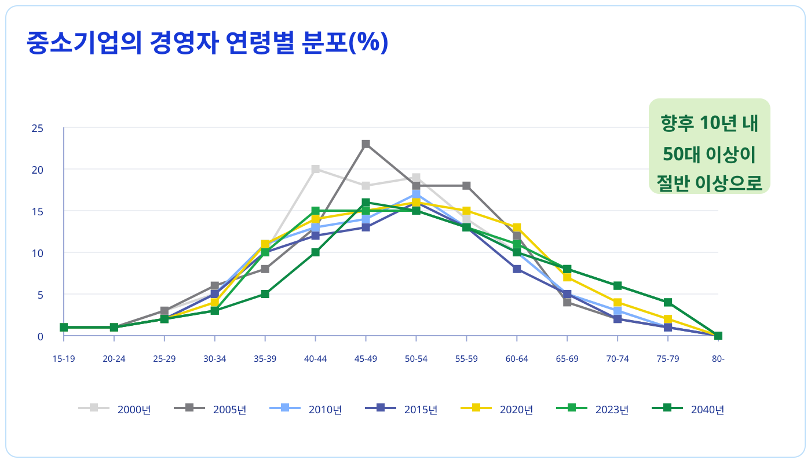
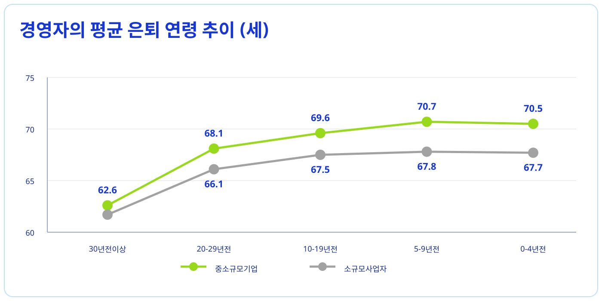
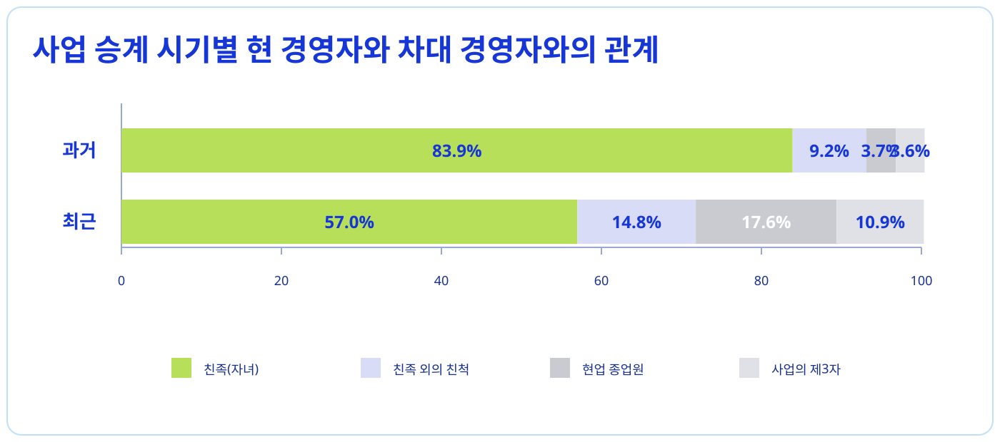
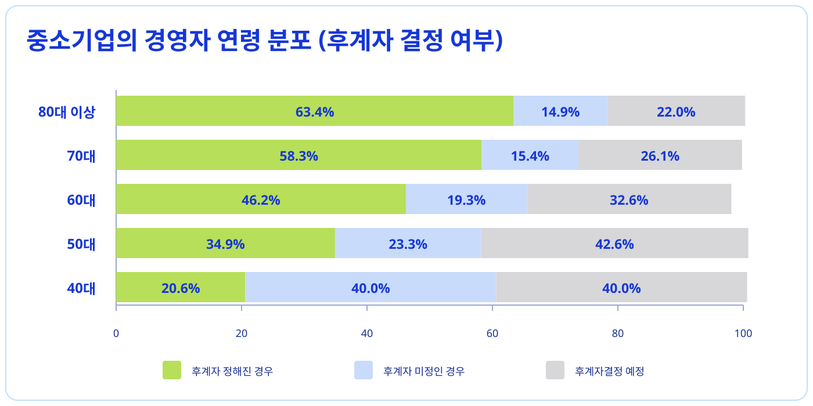
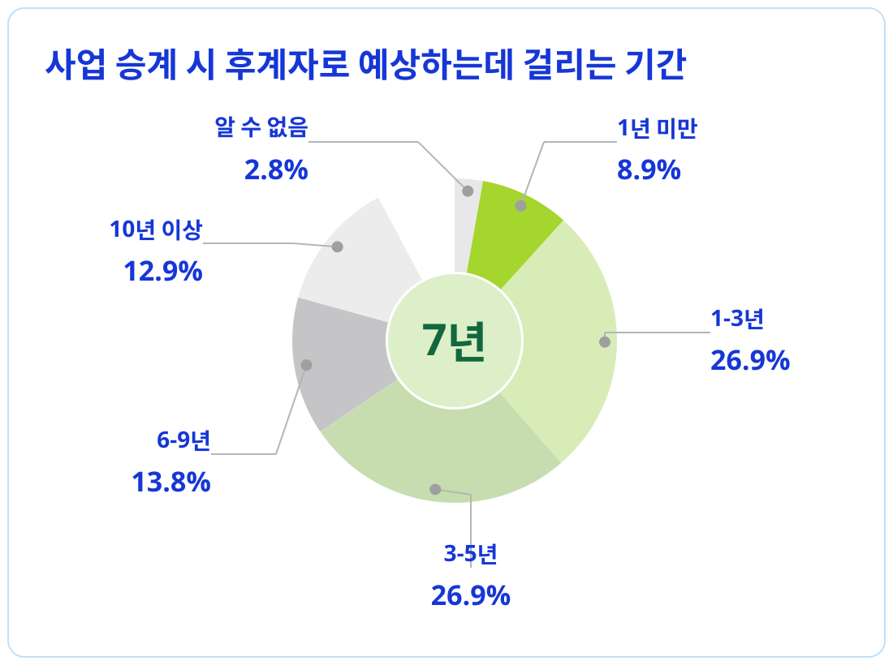

기업이 쌓아온 가치를
다음 세대로 이어가는 과정
사업 승계란?
사업 승계는 단순한 기업의 물리적 이전이 아닙니다.
경험과 노하우, 사람, 기술, 신뢰를 다음 세대에 이어
더 큰 미래를 만들어가는 중요한 과정입니다.
좋은 기업이
더 나은 내일을 만듭니다.
INSIGHT 01
중소기업 경영자의 연령 분포
중소기업 경영자의 고령화는 빠르게 높아지고 있습니다. 앞으로 10년, 50대 이상 경영인이 상당한 비중을 차지할 것으로 예상되며 사업 승계 준비는 더 이상 미룰 수 없는 중요한 과제가 되었습니다.

INSIGHT 02
경영자의 은퇴 연령은 계속 낮아지고 있습니다.
경영자들의 평균 은퇴 연령은 산업과 시대 변화에 따라 점점 낮아지고 있습니다. 특히 소규모 사업체의 경우 경기·건강·가족 문제 등 여러 이유로 은퇴 시점을 명확히 정하지 못하는 경우가 많습니다.

INSIGHT 03
증가하는 제3자 승계와 변화하는 승계 환경
과거에는 친족 승계가 중심이었지만 최근에는 직원이나 제3자가 인수하는 방식도 늘고 있습니다. 경영 환경과 기업 문화의 변화 속에서 승계 방법도 빠르게 달라지고 있습니다.

INSIGHT 04
후계자가 정해지지 않은 기업도 적지 않습니다.
60대 이상 기업 중 후계자가 정해지지 않은 기업이 많아 준비를 미루는 경우가 있습니다. 지금 해결하지 않은 승계 문제를 준비하는 일은 기업의 미래를 준비하는 일입니다.


일본에서는 사업 승계를 지원하는 체계를 운영하고 있습니다.
일본 전역의 지원 조직은 체계적인 승계 정보와 지원 제도를 운영합니다. 중소기업의 원활한 승계를 위해 기업 상황에 맞는 상담과 지원을 제공합니다.
일본 기업의 사업 승계를 검토하고 계신가요?
더 나은 기업의 미래를 위해, 지금부터 경영의 기회를 위한 첫걸음을 시작해 보세요.